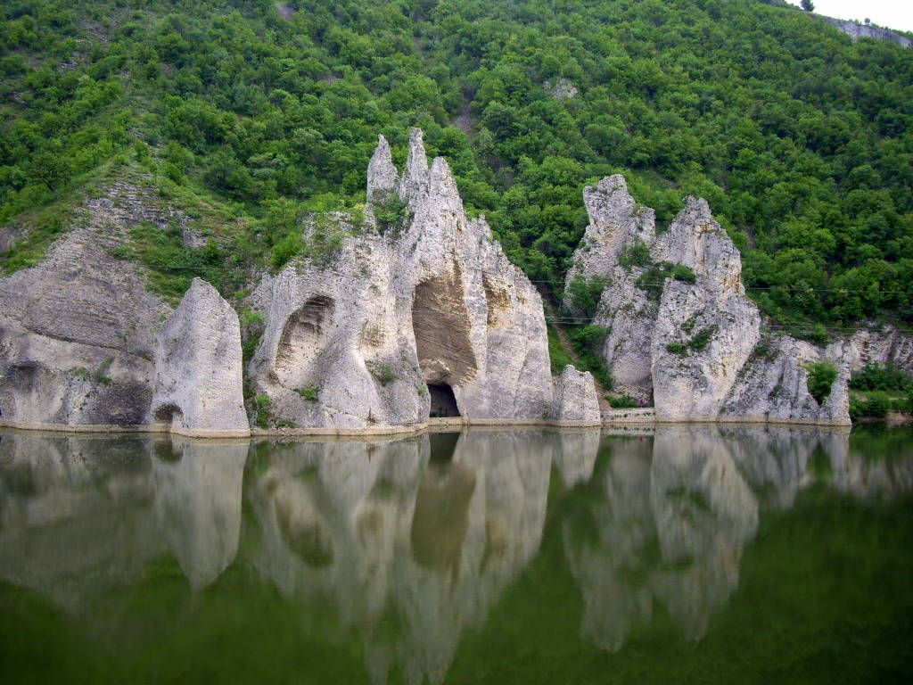
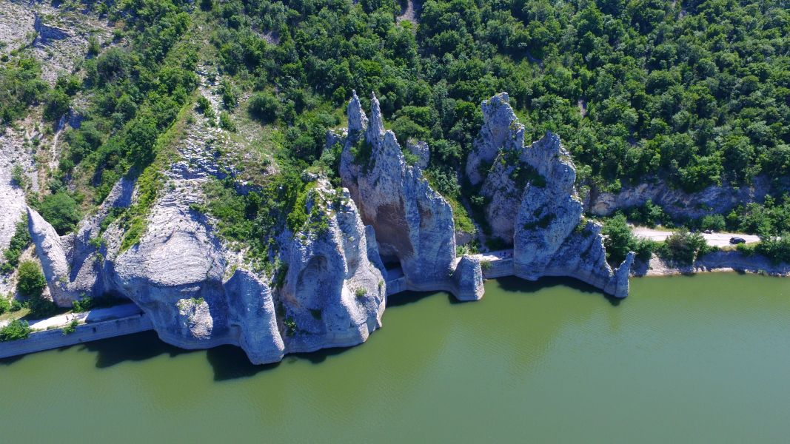
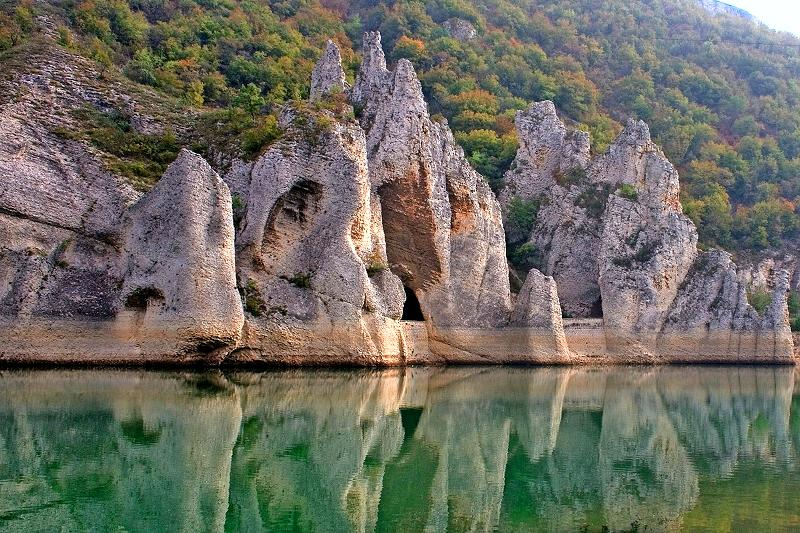
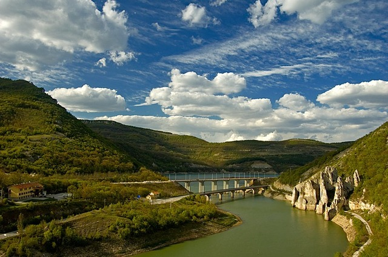

За местността
Скалният феномен Чудните скали се намира на около 90 км на югозапад от град Варна, в северното подножие на Източна Стара планина, между селата Аспарухово и Добромир, на брега на язовир Цонево. Над язовира срещу скалите минават два моста с жп линия и с асфалтов път. От там гледката към скалите е най-добра и те приличат на пясъчен замък, правен от някое дете.
Природната забележителност представлява около 10 на брой скални пирамиди с височина 40-50 метра, изградени от варовикови скали с кремъчни конкреции в тях, които са ерозирали от вятъра и водата в течение на годините. Формирайки пролома, през който тече сега, река Луда Камчия е създала тези интересни и причудливи форми, които местното население е оприличило на кулите на замък и е дало имена на отделните елементи - „Замъка“, „Великана“, „Рицаря“ и т.н. Те са групирани в три по-големи композиции, като през всяка от тях е прокопан тунел, през който минава стар път. Долната част на скалите „излиза“ направо от водата на язовир Цонево и там те са най-стръмни.
Климат
Климатът на местността е континентално-средиземноморски. Характеризира се с прохладна пролет, топло лято, топла и продължителна есен и мека зима с редки и незначителни снеговалежи. Средната януарска температура е около 1°С. Лятото е топло и предимно слънчево. Средните месечни температури през лятото са около 22°С. Есента е по-топла от пролетта с 5-6°С. Средната годишна температура е +12,2°С.
Флора и фауна
Флората и фауната в района на Чудните скали също заслужават внимание. В скалите гнездят много птици, включително грабливи, някои от които са редки за България, което ги прави обект на интереса на орнитолозите, които са чести посетители на района. В язовира пък има различни видове риба, която привлича много рибари. Те пробват късмета си от брега или влизат във водите на язовира с лодки и хвърлят въдици за червеноперка, бяла риба, уклей, костур, платика, сом, бял амур и други.
Как да стигнем
Чудните скали се намират на около 90 км югоизточно от Варна, като за предпочитане е пътят през Провадия заради качествената пътна настилка. Ако пътувате с кола, можете да стигнете непосредствено до скалния феномен, който е на 3 км от отбивката за с. Аспарухово (не се влиза в селото). Табела за природната забележителност има непосредствено преди отбивката вляво. Пътуването с БДЖ от Варна е с пътническия влак за Аспарухово, а от жп гарата пеш за около час се стига до скалите.